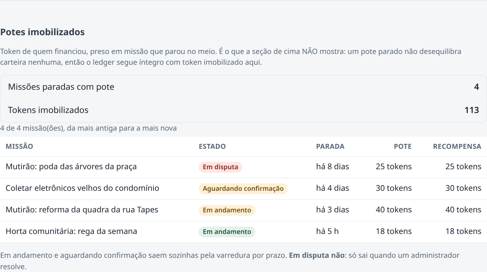

FIAP · Sistemas de Informação · PBL Fase 6 · Smart HAS
Omni-Tribo
Oracle PL/SQL integrado ao back-end Java
Renan Ferreira
RM 555833
Repositóriogithub.com/RenanFerreira02/Omni-Tribo-PBL

Omni-Tribo · PBL Fase 61 / 10
O projeto
Vizinho ajuda vizinho, e o bairro remunera esse cuidado
- Missões de bairro: mutirão, coleta de recicláveis, entrega solidária, ajuda
- Prova por check-in geolocalizado; retribuição em XP e token comunitário
- Até a Fase 5: app mobile, API Spring Boot sobre PostgreSQL e dashboard Angular
- Fase 6: uma camada Oracle com functions e procedures, chamada pelo Java
Omni-Tribo · PBL Fase 62 / 10
Parte 2 · Arquitetura
O Oracle entra ao lado do PostgreSQL, não no lugar dele
App mobileReact Native
→
API Spring Bootservices/api
→
PostgreSQL + PostGISsistema transacional, geoespacial
DashboardAngular
↗
↓ exportação dos dados
Cliente REST
→
Java + JDBCCallableStatement
→
Oracle 19c12 tabelas · 5 functions · 3 procedures
Em verde: o que esta fase acrescentou3 / 10
Parte 2 · Modelo e implantação
12 tabelas implantadas no Oracle 19c da FIAP
Identidade
OT_TRIBO
OT_USUARIO
Carteira
OT_CARTEIRA
OT_LANCAMENTO
OT_RESGATE
Missões
OT_MISSAO
OT_MISSAO_EVENTO
OT_CHECKIN
Catálogo e saídas
OT_PARCEIRO
OT_BENEFICIO
OT_ALERTA
OT_RELATORIO_TRIBO
- Token é inteiro; extrato é append-only por trigger
- Dados do próprio sistema, sem e-mail, senha ou coordenada
== Servidor ==
Oracle Database 19c Enterprise Edition Release 19.0.0.0.0 - Production
OBJECT_TYPE OBJECT_NAME STATUS
TABLE OT_ALERTA VALID
TABLE OT_BENEFICIO VALID
TABLE OT_CARTEIRA VALID
… (mais 9 tabelas OT_, todas VALID)
TRIGGER TRG_OT_CHECKIN_IMUTAVEL VALID
TRIGGER TRG_OT_LANCAMENTO_IMUTAVEL VALID
TRIGGER TRG_OT_MISSAO_EVENTO_IMUTAVEL VALID
FUNCTION FN_OT_DIVERGENCIA_CARTEIRA VALID
FUNCTION FN_OT_FORMATAR_TOKENS VALID
FUNCTION FN_OT_NOVO_ID VALID
FUNCTION FN_OT_RESUMO_MISSAO VALID
FUNCTION FN_OT_TAXA_CONCLUSAO_TRIBO VALID
PROCEDURE PRC_OT_RELATORIO_TRIBO VALID
PROCEDURE PRC_OT_RESGATAR_BENEFICIO VALID
PROCEDURE PRC_OT_VARRER_MISSOES_PARADAS VALID
23 linhas selecionadas.
== Erros de compilacao (nenhuma linha = nenhum erro) ==
0 linhas selecionadas.
Saída real: Oracle/evidencias/01-instalacao.txt · DER e dicionário no documento4 / 10
Parte 3 · Functions
Functions de indicador e de formatação, dentro do SELECT
FN_OT_TAXA_CONCLUSAO_TRIBO no ranking · FN_OT_DIVERGENCIA_CARTEIRA na reconciliação · FN_OT_RESUMO_MISSAO nos potes. Carteiras íntegras e token parado, ao mesmo tempo.
== 1. Ranking de tribos pela taxa de conclusao ==
TRIBO MEMBROS TAXA_CONCLUSAO
Tribo Pinheiros 4 100,00 %
Tribo Cidade Líder 3 sem dado
Tribo Jardim América 2 sem dado
Tribo Vila Madalena 2 sem dado
== 2. Reconciliacao: carteira x livro-razao ==
HANDLE SALDO_TOKENS DIVERGENCIA SITUACAO
apoiador_dev 4965 0 integra
jonas 50 0 integra
marlene 42 0 integra
renan 56 0 integra
… (13 carteiras, todas com divergência 0)
== 3. Potes imobilizados: token preso em missao que nao terminou ==
[Aguardando confirmação] Coletar eletrônicos velhos do condomínio · Coleta · 90 XP + 30 tokens · Cidade Líder/SP · há 4 dias · pote: 30 tokens
[Em andamento] Mutirão: reforma da quadra da rua Tapes · Tribo · 120 XP + 40 tokens · Cidade Líder/SP · há 3 dias · pote: 40 tokens
[Em andamento] Missão com pote órfão (cenário de falha) · Coleta · 30 XP + 10 tokens · Cidade Líder/SP · há 2 dias · pote: 10 tokens
[Em andamento] Horta comunitária: rega da semana · Tribo · 54 XP + 18 tokens · Cidade Líder/SP · há 5 h · pote: 18 tokens
Saída real: Oracle/evidencias/02-consultas-de-uso.txt5 / 10
Parte 3 · Procedures
A varredura devolve o token preso e registra os alertas
PRC_OT_VARRER_MISSOES_PARADAS: dois cursores, LOOP, IF, SAVEPOINT e EXCEPTION. A missão corrompida é isolada e vira alerta; as outras quatro seguem.
== 6. PRC_OT_VARRER_MISSOES_PARADAS ==
FALHA f6000000-0000-0000-0000-000000000006 ORA-20021: Estorno devolveria 0 tokens, mas o pote tem 10.
Varredura concluída: 2 expirada(s), 2 concluída(s) por prazo, 60 tokens estornados, 1 falha(s).
[Expirada] Mutirão: reforma da quadra da rua Tapes · Tribo · 120 XP + 40 tokens · Cidade Líder/SP · há menos de 1 h
[Concluída] Coletar eletrônicos velhos do condomínio · Coleta · 90 XP + 30 tokens · Cidade Líder/SP · há menos de 1 h
[Expirada] Mutirão: pintar o muro da escola · Tribo · 114 XP + 20 tokens · Cidade Líder/SP · há menos de 1 h
[Concluída] Entregar cesta básica à dona Neusa · Entrega · 66 XP + 22 tokens · Cidade Líder/SP · há menos de 1 h
[Em andamento] Missão com pote órfão (cenário de falha) · Coleta · 30 XP + 10 tokens · Cidade Líder/SP · há 2 dias · pote: 10 tokens
TIPO HANDLE CORPO
ESTORNO_RECEBIDO apoiador_dev 15 tokens devolvidos: a missão "Mutirão: reforma da quadra da rua Tapes" foi encerrada sem execução.
ESTORNO_RECEBIDO apoiador_dev 20 tokens devolvidos: a missão "Mutirão: pintar o muro da escola" foi encerrada sem execução.
ESTORNO_RECEBIDO renan 25 tokens devolvidos: a missão "Mutirão: reforma da quadra da rua Tapes" foi encerrada sem execução.
MISSAO_CONCLUIDA marlene O prazo de confirmação de "Coletar eletrônicos velhos do condomínio" venceu e seu check-in valeu como…
MISSAO_CONCLUIDA renan O prazo de confirmação de "Entregar cesta básica à dona Neusa" venceu e seu check-in valeu como prova…
MISSAO_EXPIRADA marlene "Mutirão: reforma da quadra da rua Tapes" foi encerrada por prazo: a execução não foi comprovada por…
MISSAO_EXPIRADA renan "Mutirão: pintar o muro da escola" foi encerrada por prazo sem que ninguém a aceitasse.
VARREDURA_FALHOU (operacao) "Missão com pote órfão (cenário de falha)" (EM_ANDAMENTO): ORA-20021: Estorno devolveria 0 tokens, ma…
Saída real: Oracle/evidencias/02-consultas-de-uso.txt · nenhuma procedure faz COMMIT6 / 10
Parte 3 · Integração com o Java
REST → Java → JDBC → Oracle
POST /oracle/resgates aciona PRC_OT_RESGATAR_BENEFICIO por CallableStatement. Repetir com a mesma chave devolve o mesmo resgate, sem debitar de novo.
# Marlene (42 tokens) resgata um café de 15
$ curl -X POST /oracle/resgates -H 'Idempotency-Key: evidencia-1' -d '{"usuarioId":"…902","beneficioId":"…960"}'
HTTP/1.1 201 {"resgateId":"5cf14fff-5235-6e3f-e063-103ca8c009db","codigoRetirada":"B3XMFQTL","saldoTokens":27,"replay":false}
# a MESMA chamada, com a MESMA chave
$ (mesmo comando)
HTTP/1.1 200 {"resgateId":"5cf14fff-5235-6e3f-e063-103ca8c009db","codigoRetirada":"B3XMFQTL","saldoTokens":27,"replay":true}
# Gustavo, que tem 0 tokens
$ curl -X POST /oracle/resgates -H 'Idempotency-Key: evidencia-2' -d '{"usuarioId":"…905","beneficioId":"…960"}'
HTTP/1.1 422 {"detail":"Saldo de 0 tokens é insuficiente para resgatar este benefício, que custa 15.","status":422,"title":"Saldo insufi…
# benefício inativo
$ curl -X POST /oracle/resgates -H 'Idempotency-Key: evidencia-3' -d '{"usuarioId":"…902","beneficioId":"…965"}'
HTTP/1.1 404 {"detail":"Benefício indisponível.","status":404,"title":"Benefício indisponível"}
# conferido direto no Oracle: UM lançamento para as duas chamadas repetidas
HANDLE MOTIVO VALOR_TOKENS SALDO_APOS_TOKENS CHAVE_IDEMPOTENCIA CODIGO_R STATUS
marlene RESGATE 15 27 resgate:bbbbbbbb-0000-0000-0000-000000000902:evidencia-1 B3XMFQTL PENDENTE
Saída real: Oracle/evidencias/04-java-rest-jdbc-oracle.txt7 / 10
Parte 1 · Aprimoramento da solução
O painel passou a mostrar o token imobilizado
- Novo endpoint de administrador, do banco até o dashboard
- A verificação de integridade dizia "íntegro" com 113 tokens presos
- Pendência registrada desde agosto, fechada nesta fase

GET /api/v1/admin/missoes/potes-imobilizados8 / 10
Resultados
Tudo foi executado no Oracle da FIAP
23objetos criados, todos válidos
90 / 90asserções em PL/SQL
580testes do back-end, 0 falhas
ok carga deixa o ledger integro (0 carteiras divergentes)
ok 2 missoes expiradas (C1 e C3)
ok 2 missoes concluidas por prazo (C2 e C4)
ok 60 tokens estornados (25 + 15 + 20)
ok 1 falha isolada (C6, pote orfao)
ok C5 dentro do prazo continua EM_ANDAMENTO
ok apoiador recebe os DOIS estornos de volta: 5000
ok conservacao: a soma so muda pelos 22 tokens emitidos em C4
ok segunda varredura: 0 expiradas
ok sem check-in valido nao ha pagamento: 0 concluidas
ok resgate QUEIMA: a soma em circulacao cai exatamente 15
ok replay devolve o MESMO resgate e o MESMO codigo
ok chave igual de outro usuario gera resgate proprio
ok saldo insuficiente levanta -20033
ok UPDATE em OT_LANCAMENTO e rejeitado (-20090)
ok beneficio precificado em reais e rejeitado pela CHECK (ORA-02290)
… (90 linhas no total, em Oracle/evidencias/03-testes.txt)
== 90 de 90 testes passaram · ROLLBACK feito ==
Saída real: Oracle/evidencias/03-testes.txt9 / 10
Encerramento
O que a execução real ensinou, e os limites
- Defeito achado só na execução: saldo insuficiente respondia 500. O teste unitário passava; a chamada ao Oracle acusou
- Limite: as procedures repetem regras que existem em Java e rodam sobre uma cópia dos dados
- Limite: não há sincronização contínua entre o PostgreSQL e o Oracle
- Limite: concorrência não foi medida no Oracle
Repositóriogithub.com/RenanFerreira02/Omni-Tribo-PBL
Vídeopendente — gravar e gerar de novo
Renan Ferreira · RM 55583310 / 10